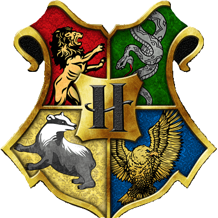

Godric Gryffindor

Godric Gryffindor fue un mago que vivió en la época medieval y uno de los cuatro fundadores del Colegio Hogwarts de Magia y Hechicería. Era amigo de Salazar Slytherin, pero se opuso a él cuando éste pensaba que no se debía aceptar a los nacidos de muggles como estudiantes de Hogwarts. Se desconoce la fecha de su muerte. El lugar de nacimiento de Godric Gryffindor se conoce como Valle de Godric, en su honor. El retrato de Godric Gryffindor sigue estando en Hogwarts, en el pasillo del séptimo piso.
Godric Gryffindor fue un mago de sangre pura, nacido en un día de junio, en el Valle de Godric hace más o menos mil años. Él y su familia vivieron en África por algún tiempo, lejos de la cacería de brujas en Inglaterra. Esto hizo que Godric descubriera la vida salvaje de África, la cual le comenzaba a agradar. Disfrutaba especialmente observando a los leones. Godric era aventurero, por eso no era difícil saber que se metió en líos. Sin embargo, él era tan noble que sus padres casi no lo tenían que retar. Godric aprendió todo lo que sabía de magia por medio de su padre, quien solía ser profesor, y quien siempre pensó que tendría que haber una escuela de magia para los niños con habilidades mágicas.
Godric Gryffindor fue uno de los más importantes magos de su época y
uno de los cuatro fundadores del Colegio Hogwarts de Magia y
Hechicería. Se caracteriza por ser de espíritu aventurero, valiente y
noble. Vivió algún tiempo con su familia en África, y después se
trasladó a Inglaterra, donde conoce a Salazar Slytherin, Rowena
Ravenclaw y Helga Hufflepuff. Después de hacerse buenos amigos,
decidieron fundar una escuela donde los jóvenes magos y brujas
pudieran cursar estudios sobre magia y hechicería.
Mientras la
fama de Godric se incrementaba por momentos, Salazar los dejó, enojado
con Gryffindor y los hijos de muggles, que, según él, no debían
asistir a Hogwarts. Desde entonces, Gryffindor y Slytherin comenzaron
a ser enemigos. La casa de Gryffindor en Hogwarts es simbolizada por
un león, y sus colores son el dorado y escarlata.